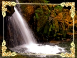
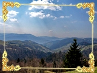
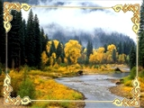

Карпати
Карпати — один з наймальовничіших куточків України. Величні гори, стрімкі ріки і водоспади, манять до себе кожного. Побувавши тут, назавжди потрапляєш у карпатський полон. У будь-яку пору року Карпати — прекрасні. Взимку вони запрошують гуляти засніженим лісом, стрімко злітати з гірських схилів на лижах чи сноуборді або ж святкувати традиційні зимові свята в колі родини.
***
Навесні природа пробуджується від довгого зимового сну. Розквітають в лісах весняні первоцвіти, в блакитному небі чути дзвінкі голоси птахів. Рання весна — це час замилування юною красою карпатської землі. Пізня ж весна — це пора традиційних виїздів у лоно дикої природи. А колесо року котиться далі, і ось уже надворі гаряче літо. Чарівні Карпати кличуть збирати ягоди, купатися в зимній воді, їздити верхи і на велосипедах, а ще — насолоджуватися частими прогулянками, ходити в походи до нових вершин.
***
Осінь в горах — грибна пора. «Тихе полювання» має той особливий шарм, що знову і знову манить до осіннього лісу. Восени повітря в горах особливо чисте і прозоре, а гори, залиті теплим сонячним промінням, красуються своїми золотими шатами… Приїжджайте в Карпати, щоб відчути себе частинкою цього вічного кола життя…
***